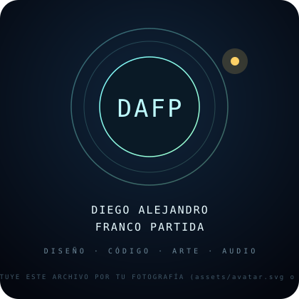
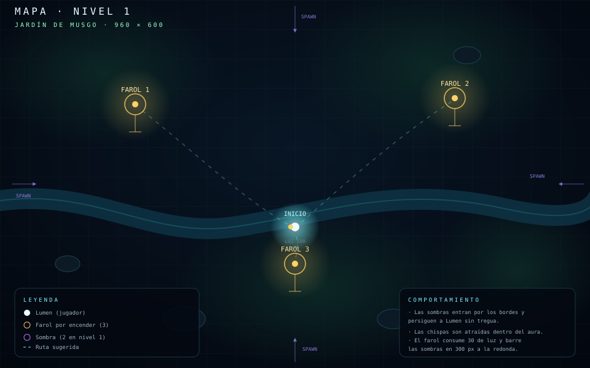

LUMEN — Documento de Diseño de Juego (GDD)
Versión Lean · v1.0.0 · Noviembre de 2026
1. Portada

Ficha del proyecto
| Campo | Detalle |
|---|---|
| Nombre del juego | LUMEN — La última luciérnaga |
| Género | Arcade de recolección y esquiva |
| Plataforma | Navegador web (HTML5 Canvas) |
| Versión | 1.0.0 |
| Autor | Diego Alejandro Franco Partida |
| Materia | Desarrollo de Videojuegos |
| Fecha | Noviembre de 2026 |
| Repositorio | https://github.com/diegouth/lumen |
| Jugar en línea | https://diegouth.github.io/lumen/ |
| Licencia | MIT |
Integrante
|
 |
Diego Alejandro Franco Partida Diseño de juego, programación, arte vectorial, audio y documentación. Proyecto individual. Nota: sustituye assets/avatar.svg por tu fotografía para la entrega final.
|
2. Concepto
LUMEN es un arcade minimalista en el que controlas a la última luciérnaga de un jardín que perdió su luz. La energía de Lumen disminuye constantemente; recolectar chispas la alimenta y encender faroles devuelve la luz al entorno. Las sombras, atraídas por el brillo, la persiguen sin descanso.
Pitch en una frase: recoge luz, enciende faroles y sobrevive a cinco noches antes de que tu propia chispa se apague.
Pilares de diseño
- La luz es vida, puntaje y visibilidad a la vez. Una sola variable obliga a decidir entre explorar, encender o escapar.
- Movimiento expresivo. El destello convierte la defensa en una decisión de riesgo: cuesta luz, pero abre camino.
- Ritmo corto y legible. Cada nivel dura entre 40 y 90 segundos; todo cabe en una pantalla y se entiende en la primera partida.
- Estética de noche. Fondo casi negro, brillos bioluminiscentes y una paleta de tres acentos.
3. Género y público objetivo
| Aspecto | Definición |
|---|---|
| Género principal | Arcade / collect-a-thon |
| Subgéneros | Esquiva, score attack, dodge ’em up |
| Perspectiva | Vista cenital 2D |
| Modo | Un jugador, partidas de 3 a 6 minutos |
| Curva de dificultad | Progresiva por nivel (más sombras, más drenaje, más velocidad) |
| Público primario | Jugadores casuales de 12 a 35 años |
| Público secundario | Estudiantes de programación y docentes que buscan un ejemplo completo y libre |
| Experiencia previa requerida | Ninguna |
| Clasificación sugerida | ATP / E (violencia fantástica mínima, sin sangre) |
Motivaciones del jugador
- Competencia consigo mismo: superar el récord guardado.
- Dominio: aprender a leer el movimiento de las sombras y encadenar combos.
- Exploración: descubrir los cinco escenarios y su música.
- Relajación activa: una experiencia corta, sin castigos severos ni curvas de aprendizaje largas.
4. Historia y ambientación
Premisa
Hace mucho tiempo, el jardín de Valdeflor se iluminaba cada noche con cientos de luciérnagas. Una noche, una niebla sin nombre —el Olvido— apagó los faroles y se llevó la luz. Las luciérnagas se apagaron una a una. Solo quedó Lumen, la más pequeña, despierta por casualidad.
Sinopsis
Lumen despierta en un jardín que ya no reconoce. Los faroles que antes marcaban los caminos están fríos, y unas sombras con ojos de violeta recorren la oscuridad. Una vocecita —el último farolero— le explica que la luz no se perdió: está dispersa en chispas que flotan entre las plantas. Si Lumen enciende los quince faroles del jardín, la noche volverá a ser suya.
Cada nivel es una zona del jardín, y cada farol encendido devuelve un recuerdo: el musgo, el invernadero, el estanque, los helechos y, al final, el mirador desde donde se ve el mar.
Tono
Íntimo, nocturno y esperanzador. Sin diálogos largos: la historia se cuenta en tres líneas de introducción por nivel y en la voz del farolero. La melancolía se resuelve en luz.
Temas
- La memoria como fuente de luz.
- La comunidad (muchas luciérnagas) frente al individualismo (una sola).
- El miedo a la oscuridad y la valentía de volver a encender.
5. Personajes
Lumen — protagonista
| Atributo | Descripción |
|---|---|
| Especie | Luciérnaga joven |
| Tamaño | 11 px de radio en pantalla (un punto de luz) |
| Color | Núcleo blanco cian; abdomen ámbar |
| Personalidad | Curiosa, terca, incapaz de dejar un farol apagado |
| Habilidad | Destello: un latido de luz que la vuelve intangible y disipa sombras |
| Debilidad | Su luz se consume con el tiempo |
| Arco | De sobrevivir sola a devolver la luz a todo el jardín |
Diseño visual: un punto blanco con un halo cian, dos alas translúcidas que baten a 24 Hz y un abdomen ámbar que parpadea al ritmo del combo. Al recibir daño parpadea; al hacer destello deja una estela de luz.
Las Sombras — antagonista
| Atributo | Descripción |
|---|---|
| Origen | El Olvido: luz que se apagó y olvidó su nombre |
| Apariencia | Círculos negros con borde violeta y dos ojos claros |
| Comportamiento | Persiguen a Lumen con oscilación; se separan entre sí; se vuelven más rápidas cuando la luz de Lumen baja |
| Debilidad | El destello y la onda de un farol |
| Función | Presionar sin castigar de forma injusta; son lentas, pero nunca se detienen |
El Farolero — voz guía
Personaje no visible. Su voz aparece en los textos de introducción y en el final. Es la memoria del jardín y quien le explica a Lumen para qué sirve cada farol.
«La luz no se gasta, pequeña. Solo cambia de manos.»
Las luciérnagas antiguas — trasfondo
No aparecen en pantalla. Son las luces que se apagaron; su recuerdo se recupera al encender cada farol. En el final, el jardín vuelve a llenarse de puntos de luz.
6. Niveles
Estructura general
- 5 niveles, cada uno con 3 faroles (15 faroles en total).
- Los faroles tienen posiciones fijas por nivel (diseño de mapa), las chispas aparecen en posiciones aleatorias y las sombras entran por los bordes.
- El nivel termina cuando los tres faroles están encendidos; no hay temporizador, pero el drenaje de luz presiona constantemente.
- Las posiciones de los faroles del nivel 1 coinciden con el mapa de la sección 6.1.
| Nivel | Escenario | Sombras | Drenaje | Velocidad base | Chispas | Faroles (x, y) |
|---|---|---|---|---|---|---|
| 1 | Jardín de musgo | 2 | 5.0/s | 62 px/s | 7 | (220, 170) · (740, 160) · (480, 430) |
| 2 | Invernadero roto | 3 | 5.5/s | 72 px/s | 7 | (170, 420) · (480, 150) · (800, 390) |
| 3 | Estanque de luna | 4 | 6.0/s | 82 px/s | 8 | (250, 140) · (710, 250) · (470, 470) |
| 4 | Bosque de helechos | 5 | 6.5/s | 92 px/s | 8 | (140, 300) · (520, 120) · (810, 470) |
| 5 | Mirador del faro | 6 | 7.0/s | 102 px/s | 9 | (180, 160) · (780, 170) · (490, 330) |
La velocidad efectiva de las sombras suma +4 px/s por nivel y hasta un 28 % adicional cuando la luz de Lumen está baja, como mecanismo de tensión.
6.1 Mapa del nivel 1 — Jardín de musgo

Comportamiento general del mapa
- Lumen aparece en el centro-sur (480, 370) con 100 de luz.
- El farol 3 está a pocos pasos (480, 430), pensado como tutorial: el jugador aprende a encender sin recorrer todo el mapa.
- Los faroles 1 y 2 obligan a cruzar el jardín en diagonal, pasando por el arroyo y las zonas de musgo.
- Las sombras entran por los cuatro bordes; no hay zonas seguras permanentes, solo rutas.
- Las chispas aparecen en cualquier punto con margen de 60 px y a más de 130 px del jugador, para que nunca haya una chispa «gratis».
- El aura de Lumen (90 a 166 px según la luz) atrae las chispas cercanas, lo que convierte la recolección en un pequeño imán.
6.2 Progresión narrativa
| Nivel | Introducción | Lectura |
|---|---|---|
| 1 | «Las luciérnagas antiguas dormían entre el musgo. Despiértalas.» | Tutorial y melancolía. |
| 2 | «El cristal roto corta la noche. Las sombras ya saben dónde estás.» | El peligro se vuelve activo. |
| 3 | «El estanque refleja un cielo que ya no existe. No te detengas.» | Reflexión y velocidad. |
| 4 | «Los helechos susurran nombres antiguos. Corre antes de que te alcancen.» | Persecución y dominio. |
| 5 | «Desde el mirador se ve el último faro. Enciéndelo y devuelve la noche a las estrellas.» | Clímax y resolución. |
7. Armas y habilidades
LUMEN no usa armas convencionales: la protagonista es una luciérnaga, y su única herramienta es la luz. Las «armas» del diseño son habilidades con costo de energía, coherentes con la fantasía del personaje.
7.1 Destello (habilidad activa)
| Parámetro | Valor |
|---|---|
| Entrada | Espacio (teclado) / botón DESTELLO (táctil) |
| Costo | 12 de luz |
| Duración | 0.16 s de impulso a 760 px/s |
| Enfriamiento | 1.05 s |
| Invulnerabilidad | 0.42 s |
| Efecto | Disipa las sombras que atraviesa (+25 × nivel puntos) |
Uso táctico: escapar de un cerco, cruzar entre dos sombras, limpiar el camino a un farol o encadenar puntos. No es un ataque a distancia: obliga a arriesgar el cuerpo.
7.2 Onda del farol (habilidad ambiental)
| Parámetro | Valor |
|---|---|
| Activación | Tocar un farol con al menos 30 de luz |
| Costo | 30 de luz |
| Radio | 300 px |
| Efecto | Enciende el farol, barre las sombras dentro del radio (+15 × nivel) y genera una onda visual de 0.75 s |
| Puntos | +200 × nivel |
Es la recompensa y la principal fuente de alivio: convierte la energía acumulada en espacio seguro.
7.3 Sin armas de fuego
No hay proyectiles, munición ni combate cuerpo a cuerpo. La decisión de diseño busca que el jugador lea el espacio y administre un recurso en lugar de apuntar. La tensión viene de la escasez de luz, no de la puntería.
8. Vestimenta y estética de Lumen
Lumen no lleva ropa: su «vestimenta» es su propia biología luminosa. El diseño funciona como un traje de luz que comunica el estado del jugador.
| Elemento | Descripción | Función de juego |
|---|---|---|
| Núcleo | Punto blanco de 4.6 px con halo cian | Legibilidad y punto de mira |
| Abdomen | Esfera ámbar de 3.2 px | Identidad de luciérnaga; guiño al farol |
| Alas | Dos elipses translúcidas que baten | Sensación de vuelo y fragilidad |
| Aura | Gradiente cian de 90–166 px | Radio de recolección y de visibilidad |
| Estela | Partículas cian al moverse | Velocidad y dirección |
| Parpadeo | Alternancia de alfa al recibir daño | Comunicar invulnerabilidad |
| Combo | El abdomen brilla más con combos altos | Feedback de puntaje |
Paleta del personaje: blanco #ffffff, cian #7ef9ff, menta #9dffcb, ámbar #ffd166.
Nota de producción: no hay sistema de cosméticos en la v1.0.0. La idea a futuro es desbloquear paletas (por ejemplo, «Lumen de otoño» en ámbar y rosa) al superar récords, sin afectar la jugabilidad.
9. Objetos especiales, props y background
Objetos interactivos
| Objeto | Apariencia | Función |
|---|---|---|
| Chispa | Estrella de cuatro puntas con halo cian | +15 de luz, +puntos, alimenta el combo |
| Farol | Aro con núcleo ámbar sobre un poste | Objetivo del nivel; cuesta 30 de luz; onda de luz |
| Sombra | Círculo negro con borde violeta y ojos | Amenaza; quita 22 de luz; se disipa con destello/onda |
| Onda de luz | Anillo ámbar expansivo | Feedback del farol; limpia sombras |
Props decorativos
| Prop | Descripción | Capa |
|---|---|---|
| Musgo | Manchas verdes oscuras en el suelo | Fondo |
| Arroyo / estanque | Trazo azul verdoso con brillo tenue | Fondo (nivel 3) |
| Rocas | Elipses oscuras con borde azulado | Fondo |
| Tallos y helechos | Líneas curvas que nacen del borde inferior | Fondo / primer plano |
| Estrellas | 85 puntos con parpadeo independiente | Fondo lejano |
| Motas de polen | 40 puntos flotantes con paralaje | Fondo medio |
| Luciérnagas de fondo | 6 puntos con movimiento sinusoidal | Fondo lejano |
| Viñeta | Gradiente radial que oscurece los bordes | Postproceso |
Background por nivel
- Jardín de musgo: musgo, tréboles, luciérnagas dormidas.
- Invernadero roto: cristales, macetas, reflejos fríos.
- Estanque de luna: agua, juncos, reflejo de una luna ausente.
- Bosque de helechos: tallos altos, sombras alargadas.
- Mirador del faro: cielo abierto, horizonte y el último farol.
En la v1.0.0 el fondo es procedural y comparte la misma base (estrellas, motas, tallos y silueta), con variaciones de color y distribución por nivel. El mapa y los props descritos aquí son la guía para una futura capa de arte dedicada.
10. Controles, cámara e interfaz
Controles
| Acción | Teclado | Ratón | Táctil |
|---|---|---|---|
| Mover | WASD / flechas |
Arrastrar | Arrastrar el dedo |
| Destello | Espacio |
— | Botón DESTELLO |
| Pausa | P / Esc |
Botón PAUSA | Botón PAUSA |
| Sonido | M |
Botón SONIDO | Botón SONIDO |
| Confirmar | Espacio / Enter |
Botones | Botones |
Cámara
Fija, cenital, sin scroll. Todo el nivel cabe en 960 × 600 unidades lógicas. La sensación de espacio se logra con paralaje de fondo y viñeta, no con movimiento de cámara.
HUD
- Arriba a la izquierda: nivel y nombre del escenario.
- Arriba al centro: barra de luz (100 puntos) con etiqueta numérica; se vuelve roja y pulsa por debajo de 25.
- Arriba a la derecha: puntaje, botón de sonido y pausa.
- Abajo a la izquierda: tres puntos de farol (encendido / apagado).
- Abajo a la derecha: combo activo.
- Centro: textos flotantes de puntaje y avisos («Necesitas 30 de luz», «FAROL ENCENDIDO»).
Accesibilidad
- Controles completos por teclado y por puntero.
prefers-reduced-motiondesactiva animaciones y transiciones.- Pausa automática al cambiar de pestaña o perder el foco.
- Barra de luz con
role="progressbar"y valor accesible. - Contraste alto: texto claro sobre fondo oscuro y acentos saturados.
- Sin parpadeos rápidos de pantalla completa (el flash se limita al 70 % de alfa).
11. Mecánicas, bucle de juego y score
Mecánicas principales
| Mecánica | Entrada | Regla | Propósito |
|---|---|---|---|
| Vuelo libre | WASD / flechas / arrastre |
Aceleración con inercia, velocidad máxima 262 px/s, sin gravedad | Control directo y legible en una sola pantalla |
| Luz como recurso | Pasiva | Empieza en 100 y baja 5.0–7.0 por segundo según el nivel | Presión constante: nunca puedes quedarte quieto |
| Recolección | Contacto con chispa | +15 de luz y puntos; el aura de 90–166 px atrae las chispas cercanas | Recompensa el movimiento y crea rutas |
| Combo | Encadenar chispas | +1 por chispa dentro de 2.2 s; máximo ×9; se reinicia con daño | Riesgo/recompensa: correr para no perder la cadena |
| Destello | Espacio / botón táctil |
Cuesta 12 de luz, impulso de 0.16 s, 1.05 s de enfriamiento, 0.42 s de invulnerabilidad | Defensa activa con costo, no un ataque gratuito |
| Encender farol | Contacto con ≥30 de luz | Cuesta 30 de luz, +200 × nivel y onda que barre sombras en 300 px | Objetivo del nivel y alivio táctico |
| Sombras | Persecución autónoma | Daño de 22 de luz, empuje y reinicio del combo; se disipan con destello u onda | Amenaza que obliga a leer el espacio |
| Dificultad progresiva | Por nivel | +1 sombra, +0.5 de drenaje, +10 px/s de velocidad y hasta +28 % con luz baja | Curva clara sin cambiar las reglas |
Condición de tensión: las sombras aceleran cuando la luz de Lumen baja, de modo que el peor momento del jugador es también el más peligroso. No hay power-ups temporales ni vidas extra: toda la economía gira en torno a una sola variable.
Bucle principal
Explorar → recoger chispas → mantener la luz → encender faroles → nivel superado
↑ ↓
└──────────────────── nuevo nivel, más sombras ────────────────┘
Condiciones
- Victoria de nivel: 3 faroles encendidos.
- Derrota: luz a 0 por drenaje o por golpes.
- Victoria de partida: superar el nivel 5.
- Récord: se guarda en
localStorageal terminar o perder.
Tabla de puntaje
| Evento | Fórmula | Notas |
|---|---|---|
| Chispa | 10 × combo × nivel |
El combo se calcula antes de incrementarse |
| Farol | 200 × nivel |
Se suma al encender |
| Sombra por destello | 25 × nivel |
Solo si se atraviesa durante el impulso |
| Sombra por onda de farol | 15 × nivel |
Todas las que estén a menos de 300 px |
| Bonus de tiempo | máx(0, 120 − s) × 4 |
Premia terminar rápido |
| Bonus de luz | luz restante × 2 |
Premia administrar el recurso |
Combo: ×1 a ×9; ventana de 2.2 s; se reinicia con daño o al vencer la ventana.
Ejemplo de cálculo (nivel 2, partida de 52.4 s, 68 de luz, 3 faroles, 22 chispas con combo medio ×3):
chispas: 22 × (10 × 3 × 2) = 1 320
faroles: 3 × (200 × 2) = 1 200
tiempo: máx(0, 120 − 52.4) × 4 = 270
luz: 68 × 2 = 136
total = 2 926
Feedback
Cada evento tiene respuesta en tres canales: partículas, sonido y texto flotante. El daño añade sacudida de pantalla y un flash rosa; el farol, un flash ámbar, onda expansiva y acorde mayor.
12. Música
La música es generativa: no hay archivos de audio; se programa en tiempo real con OscillatorNode, BiquadFilterNode y GainNode. Cada nivel tiene una nota raíz distinta, de modo que el jugador percibe el cambio de escenario sin necesidad de una melodía fija.
| Nivel | Escenario | Nota raíz | Frecuencia | Carácter |
|---|---|---|---|---|
| 1 | Jardín de musgo | La3 | 220.00 Hz | Cálido, introductorio |
| 2 | Invernadero roto | Sol3 | 196.00 Hz | Más grave, inquieto |
| 3 | Estanque de luna | Si3 | 246.94 Hz | Cristalino, suspendido |
| 4 | Bosque de helechos | Fa3 | 174.61 Hz | Oscuro, urgente |
| 5 | Mirador del faro | Do4 | 261.63 Hz | Elevado, esperanzador |
Capas de la música
- Dron: dos osciladores senoidales (raíz y quinta) a través de un filtro paso bajo con un LFO de 0.06 Hz que «respira».
- Pad: notas de una escala pentatónica mayor, con ataque de 0.9 s y liberación de 3.6 s, programadas cada 2.7–3.4 s con un planificador de 0.7 s de anticipación.
- Campanas: un seno agudo cada cuatro pasos, con caída de 1.8 s.
Reglas de mezcla
- La música se detiene en el menú y al perder, y se funde en 0.18 s al cambiar de nivel.
- El volumen general es bajo (0.55 de música, 0.9 de SFX) para no tapar los efectos.
- El audio se desbloquea con el primer gesto del usuario, respetando las políticas de reproducción automática de los navegadores.
- El botón de sonido silencia todo el grafo y recuerda la preferencia en
localStorage.
13. Efectos de audio
| Efecto | Evento | Síntesis | Duración |
|---|---|---|---|
collect |
Recoger chispa | Seno + triángulo, nota pentatónica según combo, ruido agudo | 0.2 s |
dash |
Destello | Ruido filtrado barrido 500→3200 Hz + seno 180→720 Hz | 0.22 s |
poof |
Sombra disipada | Triángulo 340→130 Hz + ruido descendente | 0.16 s |
hurt |
Golpe de sombra | Sierra 190→52 Hz + ruido 900→120 Hz | 0.38 s |
lantern |
Encender farol | Acorde de 5 notas (Do mayor add9) + ruido brillante | 1.5 s |
deny |
Acción sin luz | Cuadrada 150→110 Hz, filtro bajo | 0.14 s |
levelup |
Nivel superado | Arpegio ascendente de 6 notas | 0.45 s por nota |
gameover |
Luz a 0 | Descenso cromático de 5 notas + ruido grave | 0.9 s por nota |
victory |
Final | Acorde de 7 notas y colchón de ruido | 2.4 s |
click |
Interfaz | Seno 880→660 Hz | 0.07 s |
Diseño: los sonidos de recolección suben de tono con el combo; el daño y el apagón usan frecuencias graves y filtros cerrados; los momentos positivos usan senos y acordes abiertos. Todo se genera sin samples para mantener el repositorio ligero y la licencia limpia.
14. Arte y dirección visual
Paleta
| Color | Hex | Uso |
|---|---|---|
| Fondo profundo | #04050c / #02040a |
Noche |
| Cian luz | #7ef9ff |
Lumen, chispas, interfaz |
| Menta | #9dffcb |
Aciertos, combo, subtítulos |
| Ámbar | #ffd166 |
Faroles, puntaje |
| Violeta | #a78bfa |
Sombras |
| Rosa | #ff7b9c |
Daño, advertencia |
Principios
- Legibilidad antes que detalle: cada entidad es una forma simple con un halo.
- Contraste por luminosidad: el fondo nunca compite con la acción.
- Menos es más: una fuente monoespaciada para HUD y títulos; sin iconos decorativos.
- Todo procedural: gradientes, partículas y trazos; cero texturas descargadas.
Tipografía
- HUD, títulos y botones:
ui-monospace,SFMono-Regular,Menlo,Consolas,monospace. - Texto narrativo: fuente del sistema (
Segoe UI,system-ui). - Sin fuentes externas: carga instantánea y licencias limpias.
15. Requerimientos técnicos
El detalle de hardware y software para el desarrollo del juego y de animación está en REQUERIMIENTOS.md. Resumen:
- Jugar: cualquier navegador moderno con Canvas 2D y Web Audio; 2 GB de RAM; sin GPU dedicada.
- Desarrollar: equipo con 8 GB de RAM, VS Code, Git, navegador con DevTools y servidor estático local.
- Animar/ilustrar: Inkscape o Figma para SVG, Krita o GIMP para mapas de bits, Audacity opcional para referencia sonora.
- Publicar: cuenta de GitHub y GitHub Pages (gratuito).
16. Storyboard y guión
- Storyboard completo (6 viñetas):
STORYBOARD.md - Guión narrativo y textos del juego:
GUION.md

17. Plan de trabajo
Cronograma, ramas, convenciones de commit y checklist de pruebas: PLAN-DE-TRABAJO.md.
| Hito | Fecha | Estado |
|---|---|---|
| Concepto y propuesta | 4 nov | ✅ |
| Prototipo jugable | 5–6 nov | ✅ |
| Niveles y puntaje | 7 nov | ✅ |
| Audio y UI | 8 nov | ✅ |
| Pruebas y balance | 9 nov | ✅ |
| Documentación | 10 nov | ✅ |
| Video y despliegue | 11 nov | ⏳ |
| Entrega | 12 nov | ⏳ |
18. Riesgos y limitaciones
| Riesgo | Impacto | Mitigación |
|---|---|---|
| Políticas de autoplay bloquean el audio | Medio | El audio se inicia con el primer gesto y hay botón de silencio |
| Pantallas muy pequeñas en vertical | Medio | Controles táctiles, HUD compacto y paneles desplazables; se recomienda horizontal |
| Rendimiento en equipos antiguos | Bajo | Canvas 2D, menos de 500 partículas, dt limitado y sin sombras costosas |
| Pérdida del récord al limpiar el navegador | Bajo | Se informa que el récord es local; no hay cuentas |
| Balance demasiado difícil | Medio | Drenaje configurable por nivel, chispas abundantes, onda de farol y modo QA |
| Assets SVG no renderizados en algún visor | Bajo | Se incluyen capturas PNG de respaldo en el README |
Limitaciones conocidas
- El récord es local (no hay servidor).
- No hay guardado de partida a mitad de nivel.
- La música es procedural y no tiene una melodía fija; cada partida suena distinta.
- El modo QA (
?test=1) desactiva daño y drenaje; no debe usarse para jugar.
19. Créditos
| Rol | Responsable |
|---|---|
| Diseño de juego y GDD | Diego Alejandro Franco Partida |
| Programación (Canvas, lógica, audio) | Diego Alejandro Franco Partida |
| Arte vectorial (splash, mapa, storyboard) | Diego Alejandro Franco Partida |
| Música y efectos | Diego Alejandro Franco Partida (síntesis procedural) |
| Documentación y pruebas | Diego Alejandro Franco Partida |
| Motor | HTML5 Canvas 2D + Web Audio API |
| Licencia | MIT |
Agradecimientos a la documentación abierta de MDN y a la comunidad de Web Audio.
LUMEN · Documento de diseño · v1.0.0